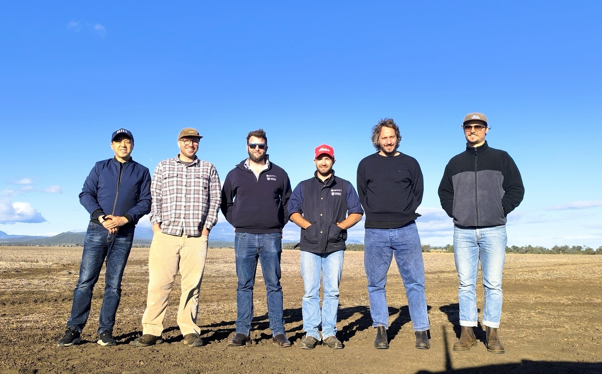

SIH Staff Visit Camden Vet School to Improve Sequencing Workflows On May 8, staff from the Sydney Informatics Hub (SIH) visited the Sydney School of Veterinary Science at Camden to support improvements in nanopore sequencing workflows. Hosted by Dr. Francisca Samsing Pedrals, the team worked closely with researchers to identify and address key bottlenecks, including manual processing steps, long runtimes, and slow file transfers—some taking up to six hours.
SIH proposed targeted improvements, including streamlined data handling and automation, to enhance the speed and efficiency of field-based sequencing pipelines. These efforts build on a previously co-developed workflow with Dr. Samsing Pedrals, recently published in Microbiology Resource Announcements, which supports rapid analysis of bacterial isolates using Oxford Nanopore data. Improved sequencing workflows not only accelerate research outcomes—such as the discovery of new bacterial strains—but also deliver direct benefits to the agriculture and aquaculture sectors, including faster detection of antimicrobial resistance in pathogens.
| |
 |
The Australian Plant Phenomics Network (APPN) University of Sydney Node Team members (Left to Right: Chao Sun, Arden Burrell, William (Tam) Salter, Bryn Collyer, Richard Harwood, Connor Cassidy)
|
|
SIH Data Scientists Visit Narrabri In the week commencing May 19, Sydney Informatics Hub (SIH) data scientists supporting the Australian Plant Phenomics Network (APPN) visited the University of Sydney (USyd) APPN node at the Plant Breeding Institute in Narrabri, NSW. This visit was an opportunity for Sydney-based node staff to work closely with APPN USyd Node director, Tam Salter and technical staff Connor Cassidy and Bryn Collyer. The focus of the visit was to discuss ongoing and upcoming projects and the best ways to merge technical and data science expertise. These discussions set the groundwork for more integrated and efficient research pipelines, enabling both the data and field teams to work together more effectively on plant phenotyping research. Throughout the week, the Sydney-based node team gained valuable hands-on experience in the field, learning about the equipment and workflows used in data collection. This field exposure allowed for meaningful conversations around the challenges faced in current data collection processes and areas for optimisation. Sydney-based node staff also connected with other agricultural researchers based at the Narrabri campus, exploring how SIH could further support their research from a data-driven perspective. In addition to these collaborative efforts, the APPN USyd Narrabri-based node team conducted drone flight demonstrations for several groups of Year 11 and 12 students, sparking conversations about science, technology, and career pathways in agriculture.
| |
|
A dachshund with fluffy eyebrows and a moustache, caused by a variant in the RSPO2 gene
|
|
OMIA celebrates 30 years of supporting genetic research
Started by Frank Nicholas in 1995, the site predated the University of Sydney’s first official website by a few months. Associate Professor Imke Tammen now leads curation of the site, although Frank is still actively involved.
The Sydney Informatics Hub (SIH) has supported OMIA for a number of years now, helping to update and maintain the site, as well as developing new features and tools. These include a machine learning-powered literature search tool that searches for the most relevant articles among the thousands published each day to PubMed. SIH has also helped strengthen OMIA’s connections and collaborations with the broader genetic research community by allowing OMIA entries to be linked to external databases like the Mondo Disease Ontology. Interested in animal genetics research? You might be able to help the researchers by reporting a suspected genetic condition for a household pet, via their new project AHIDA.
| |
Project spotlight: Low-cost cooling strategies identified to alleviate thermal and cardiovascular strain experienced by ready-made garment factory workers in Bangladesh
The ready-made garment factory in Bangladesh is a key economic driver, employing over four million workers, of which 80% are female. These factories are often hot and humid, posing health risks. To address this, Dr James Smallcombe and Professor Ollie Jay from the Heat and Health Research Centre simulated peak factory heat conditions to identify effective, low-cost cooling strategies that reduce thermal and cardiovascular strain. Male (n = 22) and female (n = 20) participants underwent 6 different cooling interventions in a randomised cross-over trial. Heat cooling strategies significantly improved physiological outcomes including heart rate, core temperature and dehydration levels, especially in males. They also improved perception of thermal comfort and sensation, as well as work output. Both building (e.g. air conditioning or roof fan) and personal-level interventions (e.g. water) were effective in reducing physiological and perceptual heat strain, with cooling benefits greater in males suggesting a potential gender-based workplace heat stress inequality.
Leading journals increasingly require independent statistical review to ensure rigorous study design and analysis. Dr Alexandra Green and Dr Alex Shaw from the Statistical Consulting team at SIH, supported the project by advising on the statistical analysis plan, performing robust statistical modelling, and delivering clear, insightful interpretations of results. Their expertise ensured analytical rigour and reproducibility.
| |
Introducing New SIH Staff Member: Dr Richard Harwood, Data Scientist, Australian Plant Phenomics NetworkEarlier this year, SIH and APPN welcomed Dr Richard Harwood to the team! Richard holds a PhD in plant physiology from the University of Sydney. His PhD research focused on understanding 3D leaf anatomy and integrating the complex arrangement of leaf tissue with gas exchange and stable isotope datasets. Exploring the links between physiology and anatomy enhances our ability to trace CO2 and water exchange and better understand key leaf processes such as stomatal conductance and photosynthesis. A major part of Richard’s research was understanding how these processes further our understanding of the water and carbon cycles and how these cycles will be influenced by climate change.
His goal with the Australian Plant Phenomics Network is to provide data driven solutions for field researchers to streamline and amplify the impact of their research. He is most excited to explore how computer vision models can be leveraged to automate the analysis of drone imagery.
| |
Introducing New SIH Staff Member: Dr Arden Burrell, Data Scientist, Australian Plant Phenomics NetworkSIH and APPN also recently welcomed Dr Arden Burrell to the team. Arden is a data scientist with a background in machine learning and Remote Sensing. He completed his PhD in 2019 at the University of New South Wales, focused on understanding global scale land degradation through the use of remote sensing and statistical modelling. From 2020 to 2024 he worked at Woodwell Climate Research Center as part of the NASA Arctic-Boreal Vulnerability Experiment (ABoVE) and focused on the use of field data, remote sensing, climate model outputs and machine learning (ML) to assess forest vulnerability and post disturbance recovery trajectories with a focus on wildfire and droughts.
His goal with the Australian Plant Phenomics Network is to leverage advanced ML and AI tools to extend the research impacts of state-of-the-art drone and satellite data.
| |
SIH Staff Profile: Marius Mather, Senior Software Engineer (Australian BioCommons) Marius is a Senior Software Engineer based at the BioCommons node at the Sydney Informatics Hub (SIH), developing tools and infrastructure to allow the bioinformatics community to collaborate and share their research. Before joining BioCommons, Marius worked at SIH as a data scientist, where he contributed to a wide variety of projects spanning biology, medicine, and the humanities. He has worked extensively on the OMIA project, developing machine-learning tools to make curating research easier, and enhancing OMIA’s connections to other research platforms. Marius's skills in software engineering and data science are underpinned by a background in psychology and biostatistics. His ability to bridge complex data challenges with user-focused software solutions is a testament to this unique academic and professional blend.
Outside of his professional work, Marius enjoys cycling, heavy metal, and spending time with his one year-old son.
| |
Transitioning your HPC workloads to NCI Gadi? Come to our drop-in sessions!Thursdays,12:00-12:30pm: ZoomSIH HPC experts are providing drop-in sessions for researchers transitioning their workloads from the University’s HPC Artemis to NCI Gadi HPC. We can help you set up your projects, troubleshoot your code, and point you in the direction of useful resources. All are welcome! Bring your questions or just listen in.
Next session: drop-in sessions run every Thursday, 12-12:30pm AEST
| |
Multivariate: Dimension Reduction
17 June Hybrid workshop: in-person or Zoom
If you printed out all the data you have collected for your quantitative research study, how many pages would it require? Could you carry it in a briefcase, or would you need a large truck? Increasingly, researchers are working with large datasets, but not all large datasets are alike. Some are ‘tall’ (they contain relatively few pieces of information on a lot of subjects), others are ‘wide’ (containing a lot of information on relatively few subjects). If your dataset falls into the ‘wide’ group, you are likely dealing with a high-dimensional dataset. These kinds of datasets are increasingly common in medicine and health (e.g. high-throughput biology data) and have been collected for many years in other fields (e.g. species abundance in ecology or psychometric questionnaires in psychology).
High dimensional datasets can be tricky to analyse. Trying to explore them by just looking at your raw data is like being inside a labyrinth. What you see in front of you won’t give you the insight you need into the bigger picture. Enter dimension reduction, which allows you to reduce the complexity of your dataset while retaining the overall patterns that yield insight into your study population. Dimension reduction sounds complicated but applying it to your research doesn’t have to be. In our dimension reduction workshop, we use simple, real-world examples to illustrate the key concepts involved, and avoid getting bogged down in mathematical detail.
Maybe like many others you have heard of techniques like PCA and nMDS, but aren’t sure what they are or how to use them. We step you through applying these dimension reduction techniques from start to finish: from raw data to full interpretation of the method outputs. The result is an accessible introduction to dimension reduction techniques, and a launching pad to explore the applications of these methods in your own research field. Cut through the complexity and reveal the hidden patterns in your data by signing up for our Multivariate Statistical Methods I: Dimension Reduction workshop on 17 June.
| |
Survey Design & Analysis day
17 June Hybrid workshops: in-person or Zoom
Thanks to university-supported online platforms like Redcap and Qualtrics, delivering surveys to research participants is easier than ever. Asking the right questions within your surveys can be more of a challenge. Is it easy for your participants to understand what you are asking? Will analysis of the responses help you answer your research questions? Is your survey well designed? On June 17, Sydney Informatics Hub presents a day of workshops relevant to researchers who want to upskill in survey techniques. Each workshop is 90 minutes long and provides practical advice on methods used frequently in survey design and analysis. Surveys I covers design and analysis considerations common to most surveys. Surveys II delves into more advanced topics including assessing reliability and creating new indices using multiple questions. Register now for one or both surveys workshops to ensure that your next survey will yield valuable information for your research.
| |
Hacky Hour18 June 2025, 2:00-3:00pm: ZoomHacky Hour is our monthly meetup where all researchers – students, staff, and University affiliates – can gather to collaborate and get research support.
Experts and mentors from SIH will be available to provide advice and answer questions on coding, data analytics, and digital tools. Hacky Hour happens on the third Wednesday of every month.
Join us virtually on Zoom at our next session on 18 June 2025 at 2pm. See our website for more details.
| |
|